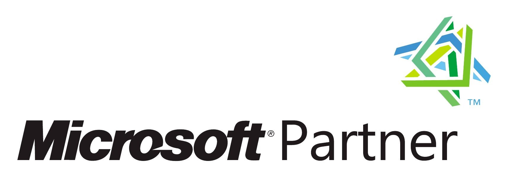
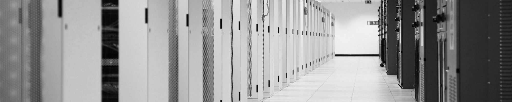

Why choose a Microsoft Certified Partner?

Microsoft Certified Partners are independent companies that can provide you with the highest levels of technical expertise, strategic thinking, and hands-on skills.
Microsoft Partners encompass a broad range of expertise and vendor affiliations and their real world perspective can help you prioritize and effectively deliver your technology solutions.
Microsoft Certified Partners have demonstrated expertise. Each Microsoft Certified Partner must employ a minimum number of Microsoft Certified Professionals (MCPs) who have a demonstrated level of technical expertise and the proven ability to deliver solutions featuring Microsoft products. MCPs must pass certification exams developed by Microsoft.
Microsoft Certified Partners have a broad-range of experience. Microsoft Certified Partners typically offer several areas of technical expertise including infrastructure, networking, office automation, e-commerce, collaboration, business intelligence, and other leading edge disciplines. Microsoft Certified Partner services include consulting, training, implementation, maintenance/support, and hosting services.
Microsoft Certified Partners have direct support from Microsoft. Microsoft Certified Partners have access to 24 x 7 x 365 support for your project whenever they need additional support from Microsoft.
Microsoft Certified Partners offer a real world perspective to your technology strategies. Microsoft Certified Partners have been in the business, on average, for more than 5 years. They bring experience to your projects gained through conducting similar projects over many years of service.
Microsoft Certified Partners are local. With Local service always know who you are doing business with up close and personal.

© 2015 ExceleratedNetworks.com L.L.C. All rights reserved.